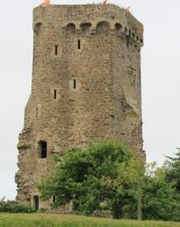
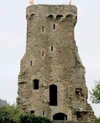
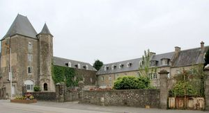
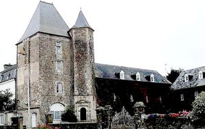

Recensement Jean-Claude Truffet
| Département | 50 — Manche |
| Canton | Créances |
| Commune | La Hayes du Puits |
| Type d'édifice | Forteresse-Vestiges |
| Période d'origine | XI-XIII-XV |
| Coordonnées GPS | 49° 16' 51,2" Nord, 1° 39' 21,16" Ouest |




Trois châteaux dans cet article la Hayes du Puits, et Surville. LA HAYES DU PUITS, le château fort de La Haye du Puits dont il ne reste que le donjon, édifié sur une motte féodale ou castrale aurait été construit au XIe siècle par Turstin Haldup, dorigine scandinave et baron de La Haye du Puits. Au XIIe siècle, la forteresse est le fief de Richard le La Haye dont l'épouse Mathilde de Vernon fonde l'abbaye de Blanchelande. La guerre de Cens Ans terminée, la baronnie changea de maître puisque l'on retrouve en 1491, Christophe de Cerisay, futur bailli du Cotentin, qui se porte acquéreur de La Haye du Puits. Le château a changé de nombreuses fois de propriétaire. Il a même appartenu aux pauvres du IXe arrondissement de Paris, qui lavaient reçu en legs en 1875. La partie Nord, la plus ancienne, fut rachetée par M. Dauvin dont un membre de la famille la léguée à Mlle Lecanu qui lhabite depuis 1947. Lautre partie, vendue à part, a été endommagée en 1944 et a subi des transformations. Elle appartient depuis 2005, à M. Bataille qui la aménagée en appartements. Seule la tour carrée a été restaurée avec un toit semblable à loriginal, la tour Renaissance a conservé son aspect initial. De l'important château il ne reste qu'un Pavillon carré accosté d'une tour polygonale. La baronnie de la Haye du Puits était aux mains d'Arthur de Magneville au XVIe siècle, puis aux Motteville et aux Caillebot de la Salle.
classement par liste de 1840. DONJON HAYE, est l'un des plus anciens de La Manche (XIe siècle). Il est le seul vestige du château fort (et de ses douves) qui surplombait autrefois les environs. Sur place, un panneau explicatif accompagne la découverte.
La HAYE du PUITS, du XIe et XIIe siècles, était bâti sur une motte féodale d'une hauteur variant entre 6 et 7 mètres. Il n'en subsiste que des vestiges. La plupart des murailles se sont écroulées dès 1850. Le reste du château a également subi des destructions pendant la bataille de La Haye-du-Puits en 1944. Seul le donjon, remanié au XVe siècle, percement des baies et couronnement de mâchicoulis, est encore visible actuellement : c'est une tour carrée denviron 5 mètres de côté pour une hauteur totale de plus de 20 mètres à partir de la route. À lintérieur, l'escalier en colimaçon compte 72 marches. La tour de plan carré est percée d'une large porte en arc brisé. On y voit encore les fentes servant à la manuvre du pont-levis. Des arrachements de courtines présents sur les deux flancs de la tour laisse suggérer la chemise disparue. Nous serions donc en présence d'une motte fortifiée du type shell-Keep, type peu courant dans la région.Il reste par contre en face de la rue un « second château », ancien manoir, qui fut construit par Arthur de Magneville au début du XVIe siècle et remanié au XVIe?-?XVIIe siècle. L'ensemble fut construit de l'autre côté des douves et donne par sa composition une impression de « basse-cour ». L'édifice comporte plusieurs tours et une cave avec des voûtes. Une porte ouvragée permet d'accéder à la tourelle. A dix K.M. à l'ouest à SURVILLE un château; petit village du littoral ouest du Cotentin est situé face aux îles anglo-normandes (Jersey et Guernesey). Le château de Surville est en bord de mer, le long des dunes (havre de Surville) dans un site protégé. Le château de Surville est loué pour fêter vos événements (mariages, baptêmes, séminaires, etc.).
Haye; Christophe de Cerisay
"
Trois châteaux dans cet article la Hayes du Puits, le donjon et Surville. Surville GPS: 49° 16' 51,2" Nord, 1° 39' 21,16" Ouest